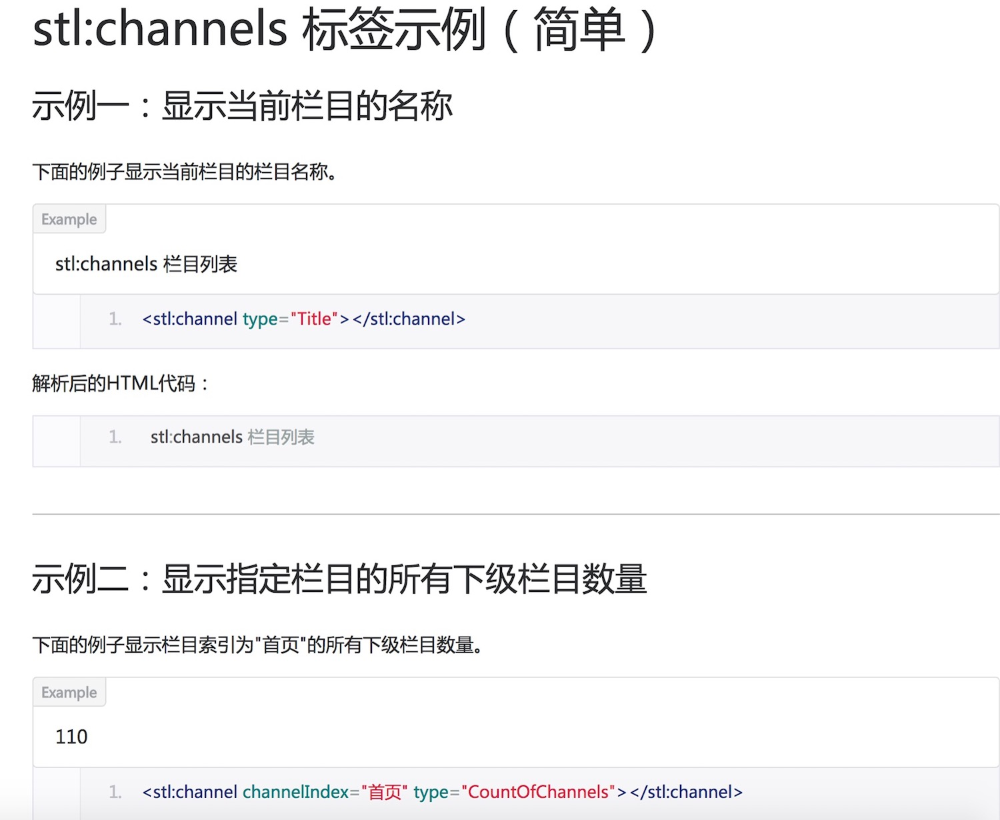

什么是STL语言？
STL 语言全称称为 SiteServer 模版语言（SiteServer Template Language），是一种您可以用来创建显示模版的服务器端语言。STL 通过标记符号（元素及实体）来标记要调取并显示的各种网站数据及功能，通过SiteServer 解析引擎将对应标记转换为HTML 语言并在服务器中生成对应的静态页面文件。
1、主要功能
在不需要专业的程序开发人员的前提下，灵活调取SiteServer CMS 后台管理的各种数据，并解析成HTML，最终生成对应的静态页面文件。
２、语言特色
STL 语言由百容千域创建，用来克服 HTML 语言的局限。和 HTML 语言一样，STL 语言也是一种标准通用标记语言（SGML），采用与HTML 语言一致的语法和规则。STL 模版语言制作并不复杂，但功能强大，其主要特点如下：
简易性： STL 语言版本升级采用超集方式，从而更加灵活方便。
可扩展性： STL 语言的广泛应用带来了加强功能，增加标识符等要求，STL 语言采取子类元素的方式，为系统扩展带来保证。
易学性： 和HTML 语言规则保持一致确保了STL 语言易于学习，便于使用。
3、 书写方式
基本文本、文档编辑软件： 使用微软自带的记事本或写字板即可编写，当然，通常采用Dreamweaver等HTML编辑软件进行编辑。
SiteServer 软件的模板编辑器： SiteServer 软件中集成了STL 模板编辑器，能够显示行数、高亮、颜色标示以及对格式化代码等功能。
所见即所得模板插件： 这是我们推荐的方式，同时也是使用最广的方式，可以在无需记住STL 语言细节的情况下以最快速便捷的方式编写STL 语言，我们根据用户的习惯提供两款模板插件，包括Dreamweaver 模板插件以及Sublime Text 模板插件。采用模板插件方式，开发速度更快，效率更高，且直观的表现更强。
